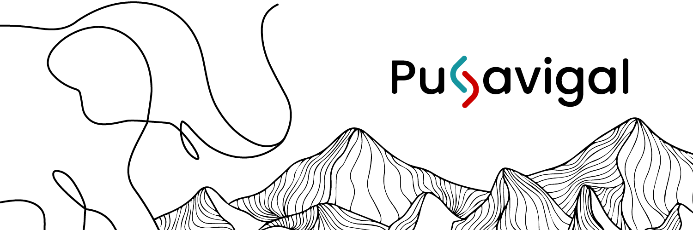

Platform Vision
We build digital systems that feel clear from the first interaction and stay maintainable as they scale.
Puravigal Platform
Puravigal creates modern digital products, technology platforms, and creative systems that stay simple, scalable, and thoughtfully designed.

Shared systems for products, pages, forms, and future modules.
Platform Overview
Puravigal is designed as a product-driven platform where experiments, tools, and commercial systems share the same clean architecture. The foundation stays modular so each product can grow without carrying unnecessary complexity.
We build digital systems that feel clear from the first interaction and stay maintainable as they scale.
Common utilities, shared components, and node-based page layers keep the codebase reusable and structured.
Products
Puravigal products are built to solve practical digital needs while keeping room for experimentation and iteration.
A product-ready point of sale foundation built for performance, clarity, and business workflows.
View POSFocused internal and external tools that support daily operations, product decisions, and workflow speed.
Learn MoreThoughtful explorations that test ideas, interaction models, and future-facing product opportunities.
Talk to UsPhilosophy
We believe product systems become stronger when the structure is quiet, the code is readable, and the experience respects both users and developers.
Every layer should be easy to understand, extend, and hand off to the next developer.
Fast interfaces, light scripts, and efficient rendering are built into the foundation.
Start Building
If you want a focused product foundation, a practical SaaS interface, or a cleaner system architecture, let us know what you are planning.